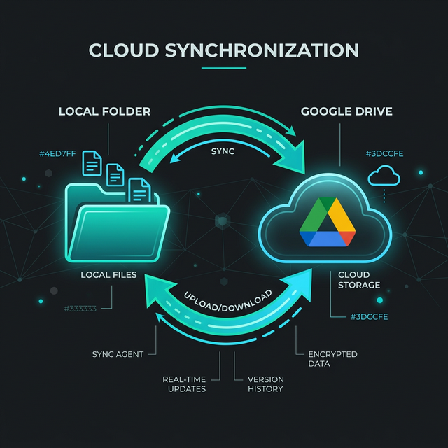

Rclone Google Drive Setup & Sync Guide

This is your personal guide for managing Google Drive synchronization on this machine.
1. Credentials (Your Private Tunnel)
We have configured rclone to use your own Google Cloud Project. This stops the "daily logout" issue.
How to create your own Client ID & Secret
If you ever need to create a new set of keys from scratch, follow these steps:
- Google Cloud Console: Go to the Google Cloud Console.
- Create Project: Click the project dropdown at the top and select "New Project". Give it a name like
rclone-paul. - Enable API: In the search bar, type "Google Drive API" and click Enable.
- Configure OAuth Consent:
- Go to APIs & Services > OAuth consent screen.
- Choose "External" and click Create.
- Fill in the App name (e.g.,
rclone) and your User support email. - Add your email to the Developer contact information.
- Click Save and Continue until you reach the dashboard.
- Create Credentials:
- Go to APIs & Services > Credentials.
- Click + Create Credentials > OAuth client ID.
- Select "Desktop app" as the Application type.
- Name it
rclone-pauland click Create.
- Get the Keys: A popup will show your Client ID and Client Secret. Copy these into this guide!
How to re-authenticate (if needed)
If you ever get an "Authorization failed" error, run:
1. Type y to refresh the token. 2. Type y for auto-config. 3. In the browser, log in withshamrap@g.clemson.edu.
4. Click Advanced > Go to rclone (unsafe) > Allow.
2. Daily Workflow (Your Duty)
To keep your files synced, you should follow this routine: - After significant local changes: Run the "Upload" command to back up your work. - Before starting work: Run the "Download" command if you think you changed files on another device.
Step 1: Clean Up Duplicates
Google Drive sometimes creates multiple files with the same name. Run this to fix it automatically:
Step 2: Sync Your Work
- To Upload (Local -> Cloud):
- To Download (Cloud -> Local):
Note: I recommend using copy instead of sync. copy is safer because it never deletes files; it only adds new ones.
4. Speed Tips (Save Time)
If checking all 30,000 files takes too long (e.g., 4-5 minutes), use these tricks:
Trick 1: Sync Only Your Active Project
Instead of syncing all of works, only sync the folder you are actually using today:
Trick 2: Use Fast-List
This tells Google Drive to send the file list in larger chunks, which can cut the "Checking" time in half:
5. Helpful Tips
- Check first: Run
rclone check /home/paul/works gdrive:works --size-onlyto see what is different without changing anything. - Progress: Always use
-Pto see how much data is being transferred.